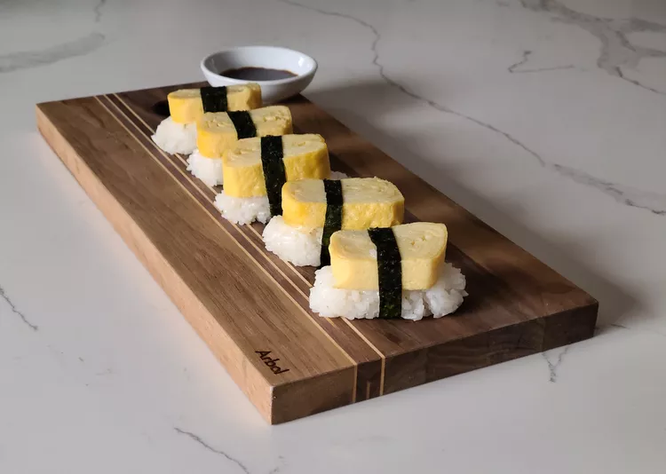

<!DOCTYPE html>
<html lang="en">
    <head>
        <meta charset="UTF-8">
        <title>Odin Recipes: Japanese Tamago Egg</title>
        <link rel="stylesheet" href="../styles.css"/>
    </head>
</html>
<body>
    <h1>The Japanese Tamago Egg</h1>
    

    <h3>Description</h3>
    <p>Tamago is a Japanese rolled omelet, also known as <em>tamagoyaki</em>. The omelet is sweet, has a light texture, and works well when sered over sushi rice with soy and wasabi sauce for dipping.
    </p>
    <p>This is made by rolling together thin layers of fried eggs, then slicing the log into rectangles. Since the egg is mixed with dashi, sugar, and mirin, the finished product has a complex and subtly sweet flavor. Tamago is traditionally served for breakfast or as a sushi ingredient.</p>
    
    <h3>Ingredients</h3>
        <li><strong>Dashi stocck</strong> You can use store-bought dashi stock or make your own at home.</li>
        <li><strong>Sugar:</strong> Sweeten things up with a tablespoon of white sugar.</li>
        <li><strong>Mirin:</strong> Mirin, or Japanese sweet wine, adds a blend of sweetness and umami.</li>
        <li><strong>Soy sauce:</strong> Salty soy sauce lends savory flavor.</li>
        <li><strong>Oil:</strong> Use vegetable oil to cook the tamago in a skillet.</li>
    </ul>

    <h3>Steps</h3>
    <ol>
        <li>Beat the eggs, then whisk in the remaining ingredients (except the oil)</li>
        <li>Follow the detailed instructions in Step 3 to cook and form the rolled omelet</li>
        <li>Cut into six equal pieces to serve.</li>
    </ol>

    <a href="../index.html" target="_blank" rel="noopener noreferrer">Back to Homepage</a>
</body>
